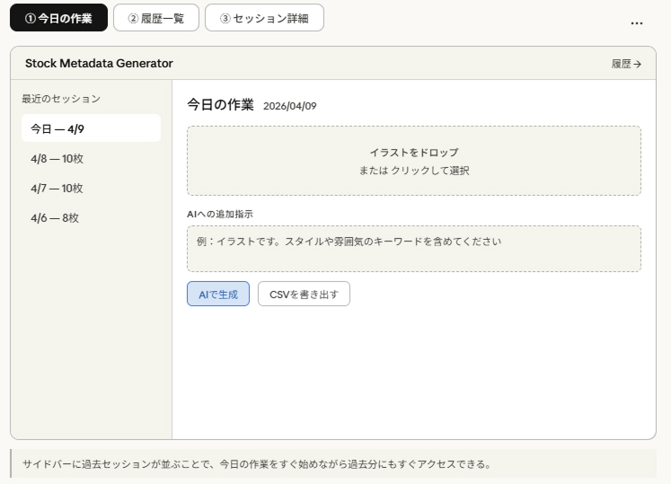
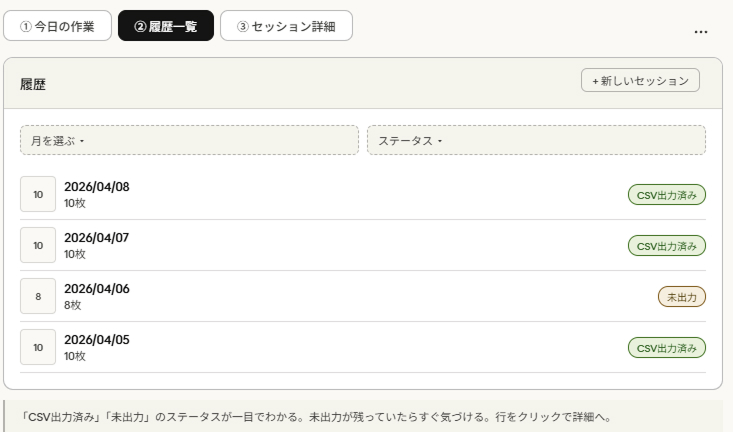
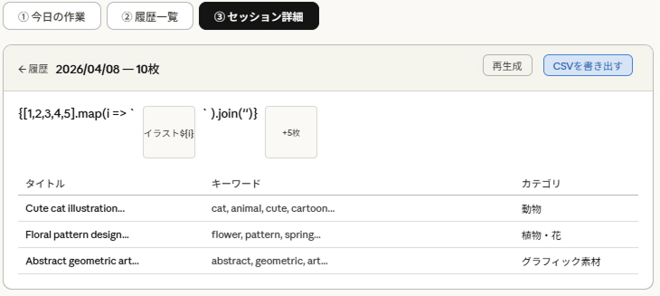
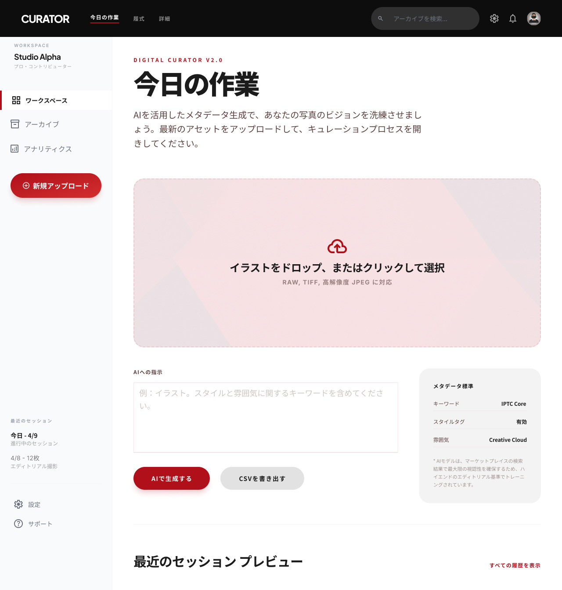
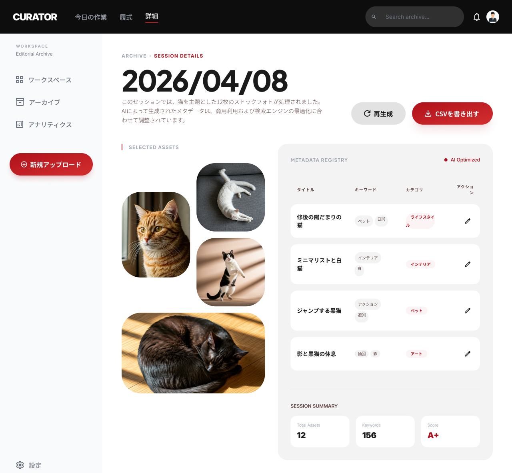

自分自身がイラストレーターとしてAdobe Stockに投稿する中で感じていた課題を出発点に、メタデータの一括生成ツールをゼロから設計・実装したUXデザインプロジェクト。
01 — 課題定義・カスタマージャーニー
毎日10枚のイラストをAdobe Stockに投稿する作業において、タイトル・キーワード（最大49個）・カテゴリのメタデータ作成に1バッチあたり30〜40分かかっていた。1枚ずつAIに依頼し、コピペで登録する作業の繰り返しが大きな摩擦ポイントになっていた。
Step 02
AIに依頼
キーワード49個を1枚ずつ手動依頼
繰り返しが苦痛
Step 03
Stockに登録
管理画面に1枚ずつD&D
枚数分繰り返す
Step 04
メタデータ入力
1枚ずつコピペ入力
ミスが起きやすい
Step 05
登録完了
記録は手元に残らない
履歴なし
⏱ 30〜40分 → 数分に短縮
Flow 02
一括アップロード
まとめてドロップ
1回で全枚数読み込み
Flow 03
AI一括生成
ボタン1つで生成
全枚数を自動生成
Flow 04
確認・修正
インラインで編集
必要箇所だけ修正
Flow 05
CSV出力→登録
一括登録
履歴がいつでも確認できる
02 — 設計プロセス・ワイヤーフレーム
「今日の作業」「履歴一覧（Archives）」「セッション詳細」の3画面で完結するシンプルな情報設計を採用。サイドバーから過去セッションに素早くアクセスできる構造にした。

WIREFRAME 01
Screen 01
今日の作業
ドロップ・指示・生成を1画面に集約

WIREFRAME 02
Screen 02
履歴一覧
CSV出力状況を一目で確認できる設計

WIREFRAME 03
Screen 03
セッション詳細
左サムネイル一覧・右詳細のパネル型
03 — ビジュアルデザイン
Google Stitch（AI UIデザインツール）を活用して効率的にUIデザインを起こした。ダークナビゲーション・赤のアクセントカラー・Zen Kaku Gothic Newのタイポグラフィで、プロフェッショナルかつ使いやすい画面を設計した。

TODAY'S WORK
Design 01
Today's Work
Step 1〜3のカード構成。生成ボタンを常に視界内に配置。

ARCHIVES
Design 02
Archives
サムネイルグリッドとメモ機能でセッションを管理。

SESSION DETAIL
Design 03
Session Detail
キーワードを上位10個赤表示で優先度を可視化。
04 — テストと改善
実際に自分の業務で使いながら課題を発見し、UIの改善につなげた。「作って終わり」ではなく、使う中で生まれた気づきを設計に反映するプロセスを重視した。
01
今日の作業画面
ドロップゾーンが大きすぎて生成ボタンが画面外に。スクロールしないとボタンが見えない状態だった。
↓ 改善
Step 1〜3カード構成に変更。全操作が1画面で完結するようになった。
02
メタデータ確認・編集
生成後にテーブルが並ぶだけで1枚ずつ確認しにくかった。キーワードが多いと特に読みにくい。
↓ 改善
左サムネイル一覧・右詳細のパネル型に変更。キーワードをタグ表示し、上位10個を赤で強調。
03
履歴画面
セッション名がなく日付しか手がかりがなかった。過去のバッチを探し出すのが困難。
↓ 改善
メモ（セッション名）機能を追加。サムネイルグリッドで内容を視覚的に把握できるカード型に変更。
05 — ブランディング・ロゴ
カメラ×AIをモチーフにしたロゴマークを制作(Figma)。ナビゲーションバーとSTEPマーカーに使用し、サービスとしての一貫性を持たせた。
Stock Photo Generator
カメラ×AIをモチーフにしたロゴマーク。
ナビゲーションバー・STEPマーカーに使用。
06 — 実装・成果
React + Vite + Anthropic Claude APIで実装。ローカル環境で実際の業務に使用しており、毎日の投稿作業を大幅に効率化した。

本番スクリーンショット
本番環境 — ローカルで動作するReactアプリ
制作を通じて学んだこと
自分自身のペインポイントから出発したことで、ユーザー調査なしに深い課題理解ができた。ワイヤーから始めて実装まで一人でやり切ったことで、UXの判断がそのままUIに反映される体験を得られた。AIツール（Stitch・Claude API）を活用した効率的な設計・開発のワークフローも、このプロジェクトで確立できた。